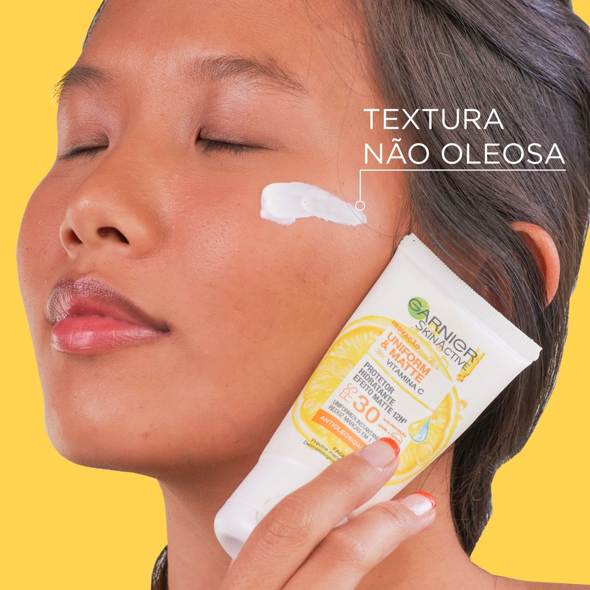
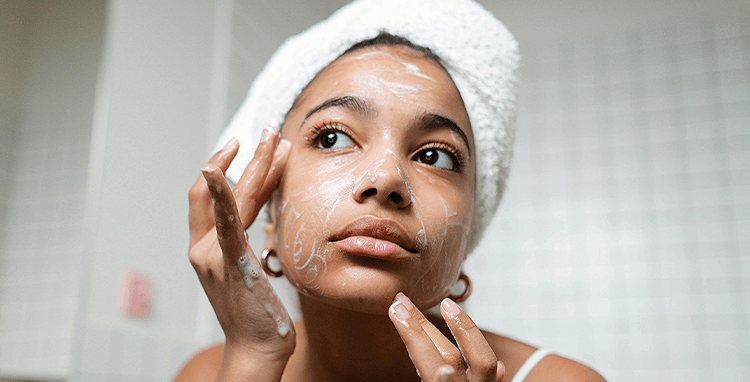

Possui FPS 30 e o Antioxidante Natural Vitamina C, que Controla a Oleosidade, Uniformiza e Reduz Imperfeições da pele em uma semana. Nossa pele é exposta diariamente a diversas agressões e merece um cuidado especial.


Com os dedos, comece a espalhar o produto do centro do rosto para fora. Faça movimentos suaves e circulares para que ele seja distribuído de forma uniforme.